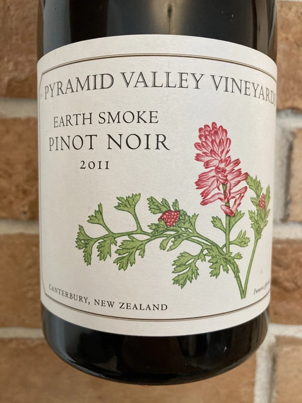

- Type
- Red Still, Dry
- Producer
- Pyramid Valley
- Vintage
- 2011
- Location
- New Zealand, North Canterbury
- Grapes
- Pinot Noir
- Alcohol
- 14
- Sugar
- NA
- Price
- 1690 UAH, 1472 UAH
- Cellar
- N/A
Ratings
2021-10-01 - 8.00
Murky and pale garnet colour. Sophisticated bouquet with pickles, wild strawberries, wet earth, tobacco and spices. Palate is ripe, fruit-forward and powerful, with nice pickles and wet forest floor touch. Value is questionable, but it’s definitely interesting experience. I like how Pyramid Valley plays with low intervention producing border wines.
2022-12-02 - 8.00
I tasted it blind, and knowing it was a Pinot Noir, I quickly guessed the wine and vintage. It’s complex and not easy to enjoy. Besides, it’s over the peak already. Wet earth, wormwood, tobacco, pickles, mushrooms, and spices. You see, there is no room for fruits anymore. It’s high in alcohol, salty and ripe. The aftertaste is long, but wormwood plays a dangerous game here, adding some bitterness and complex flavours. Not for everyone. Somehow, I enjoyed (maybe I was already drunk).
Related

@512.webp)